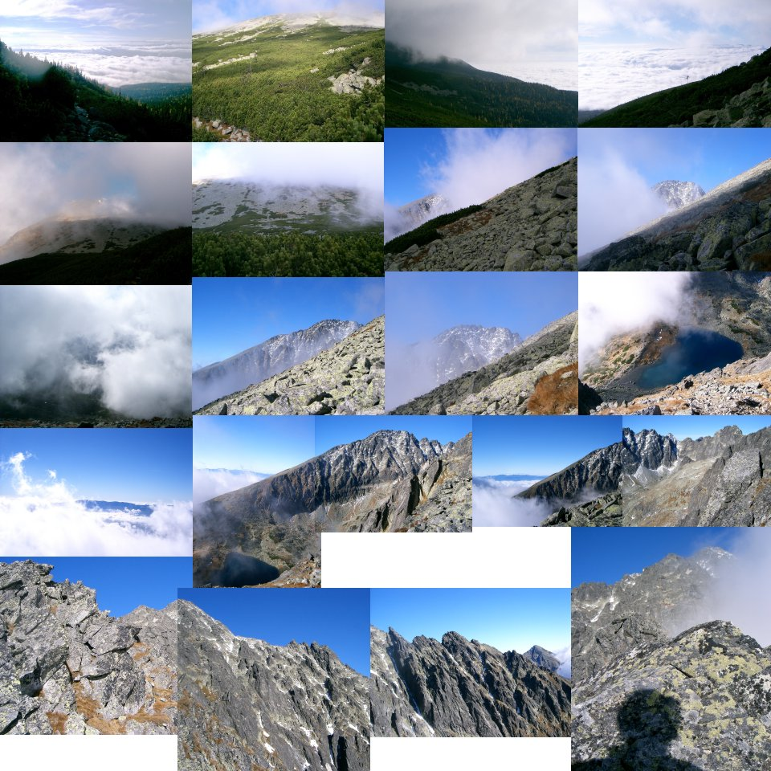
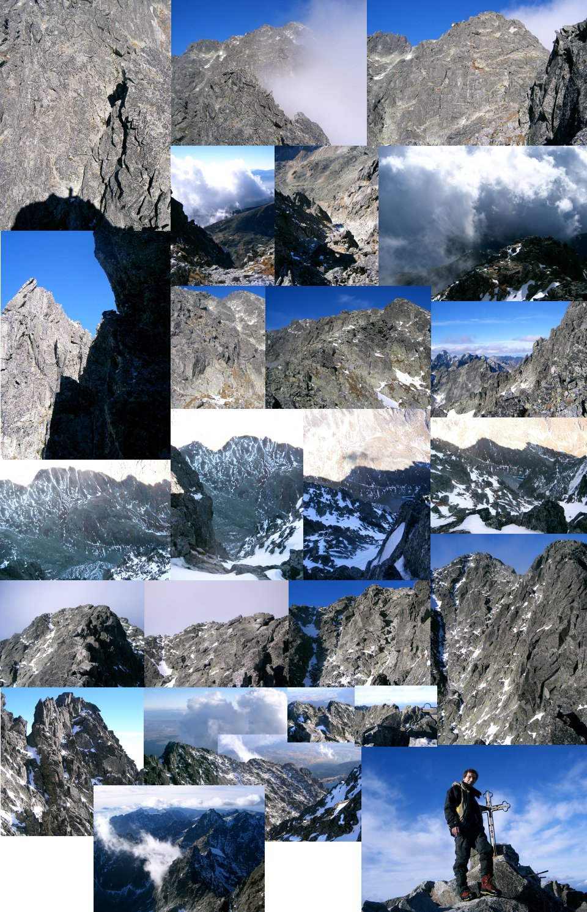
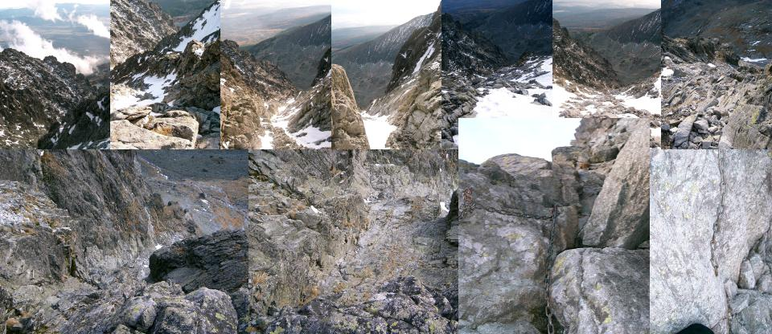
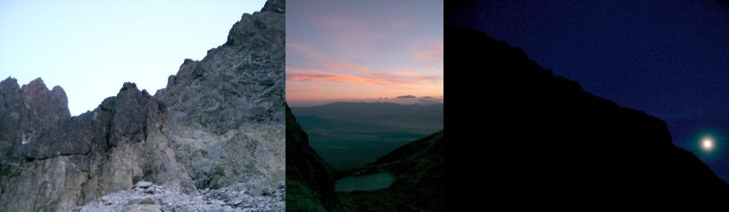

2004. október 23. Gerlachfalvi csúcs a déli gerinc felől.
7:35-11:45. Túra Tátraszéplaktól (Tatranská
Polianka, 990m) a Kotol csúcsig (2354m).

12:00-15:15. Gerincmászás (900m, III) a Gerlachfalvi csúcsig (2654m).

16:00-17:30. Lemenet a Batizfalvi próbán (Batizovsky zlab). Meredekebb
részeken rozsdás vas létrafokok vagy lánc. Mint kiderült, az utóbbit nem
érdemes két kézzel fogni ereszkedéshez. Hacsak nem kísérleti jelleggel,
módosult tudatállapotok megtapasztalása végett. A szubjektív idő
hihetetlenül felgyorsul a láncszakadás pillanatában. Utólag elképzelni is
nehéz, hogyan lehetett az a töredék másodperc elég arra, hogy a láncot
elengedve rákapjak a sziklára. A fogás persze nem volt jó, a lendület
elszakított tőle. - Milyen lesz a nemlét? - Nem kaptam választ, viszont
egyszercsak azon vettem észre magam, hogy megálltam. Csak másfél métert
csúsztam.

17:38-18:06. Alvég, tó és a gerinc.

2004. november 11. Karcsmar folyosó.
Index